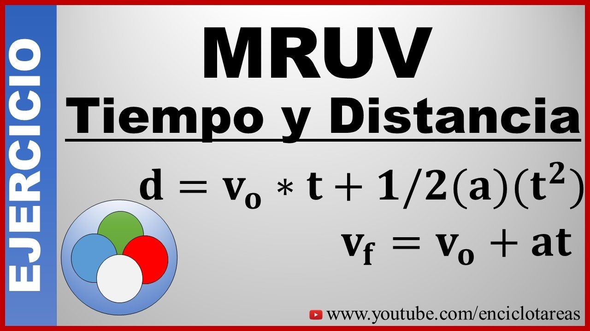
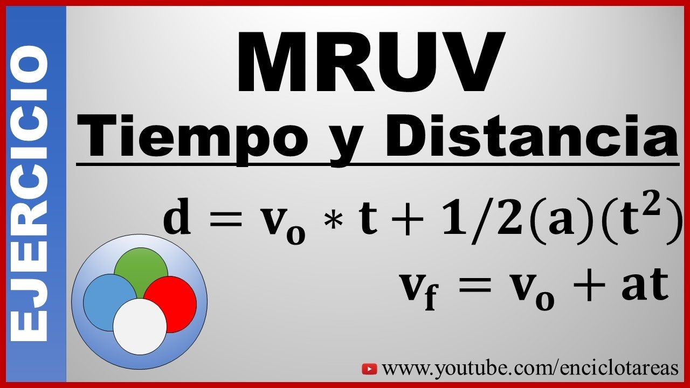

Movimiento Rectilíneo Uniforme (MRU)
El Movimiento Rectilíneo Uniforme (MRU) describe el desplazamiento de un objeto que se mueve en una trayectoria recta con una velocidad constante. Este tipo de movimiento es fundamental en la física para entender cómo se comportan los objetos cuando no hay aceleración.
En el MRU, la velocidad y el tiempo son variables constantes, lo que implica que la distancia recorrida por el objeto es directamente proporcional al tiempo transcurrido. Este comportamiento se puede representar en un plano cartesiano donde el objeto se desplaza en línea recta.
Las ecuaciones básicas del MRU involucran tres variables principales: Velocidad (V), Distancia (d) y Tiempo (t). A continuación, se presenta la fórmula principal cuando la velocidad es la incógnita:


Calcular Velocidad
Determina la velocidad constante del objeto utilizando la fórmula:
v = d / t
Calcular Distancia
Calcula la distancia recorrida por el objeto:
d = v × t
Calcular Tiempo
Determina el tiempo necesario para recorrer una distancia dada:
t = d / v
Movimiento Rectilíneo Uniformemente Variado (MRUV)
El Movimiento Rectilíneo Uniformemente Variado (MRUV) se refiere al desplazamiento de un objeto que se mueve en línea recta con una aceleración constante. A diferencia del MRU, en el MRUV la velocidad del objeto cambia de manera uniforme a lo largo del tiempo.
Este tipo de movimiento es esencial para comprender fenómenos como la aceleración de vehículos, la caída libre de los cuerpos bajo la influencia de la gravedad, entre otros. Las fórmulas del MRUV permiten calcular variables como la velocidad final, la distancia recorrida y el tiempo de movimiento.
 

Fórmulas Básicas del MRUV
- Velocidad Final (v): v = v₀ + a·t
- Distancia Recorrida (s): s = v₀·t + (1/2)·a·t²
- Velocidad Final al Cuadrado (v²): v² = v₀² + 2·a·s
Calcular Velocidad Final
Determina la velocidad final utilizando la fórmula:
v = v₀ + a × t
Calcular Distancia Recorrida
Calcula la distancia recorrida utilizando la fórmula:
s = v₀ × t + ½ × a × t²
Calcular Aceleración
Determina la aceleración utilizando la fórmula:
a = (v - v₀) / t